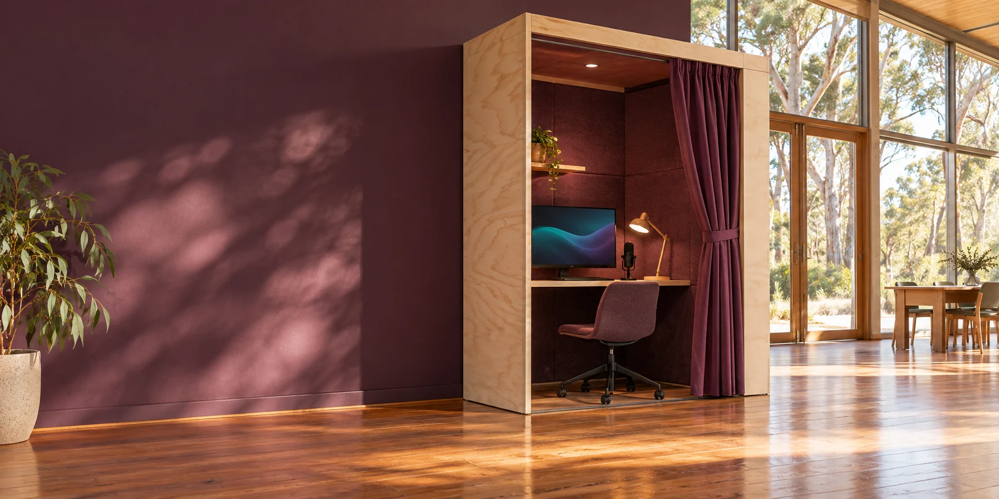

A FAIR GO IN THE AGE OF SUPERINTELLIGENCE
Contribution and
public participation
The Verse Box proposal connects personally owned artificial intelligence with everyday contribution and public decisions. Community-Hours recognise voluntary human time; P4A is a proposed interface for democratic participation.
A fair go and Joyful Responsible Abundance
Superintelligence describes a possible level of AI capability exceeding human performance across many kinds of task. The fair-go question asks how growing capability could expand people's practical choices, understanding and share in the result. [1, pp. 2-7]
The United States and China are competing to lead increasingly powerful AI. This work proceeds on the view that Australians need practical ways to shape and benefit from the transition towards possible superintelligence. Aura, C-Hours and P4A are being developed to strengthen everyday people's understanding, participation, ownership and share in the benefits. The UNGA81 contribution frames this work as Joyful Responsible Abundance. [1, pp. 3-7; T10]
| Opportunity | Question | Evidence |
|---|---|---|
| Access to intelligence | Does this help with my task, language and access needs? | Task results, sources, support and available arrangements. |
| Learning and livelihoods | What could I learn, make, practise or offer? | Invitations, costs, access, paid/voluntary status and demonstrated skill or work. |
| Shared computing | Would shared capacity suit a job I do not want to buy equipment for? | Availability, operator access, performance, cost, governance and migration. |
| Ownership and enterprise | What share would people have in the productive capability? | Ownership terms, responsibilities, funding and distribution of benefits. |
| Freedom over time | Does this reduce burdens or create room for care, creativity or rest? | Observed time and effort; funded time away from work has its own arrangement. |
| Democratic participation | Which decisions affect my life, and how might I help shape them? | Sources, responsible bodies, genuine responses, amendments and outcomes. |
Joyful Responsible Abundance
Joyful: more room for relationships, curiosity, creativity, belonging, rest and enjoyment.
Responsible: care for consequences, including who benefits, who carries costs, effects on other people and the environment, and what reaches future generations.
Abundance: wider access to useful knowledge, resources, care, opportunity and the ability to participate. The three ideas together ask whether growing capability makes life more worth living and its benefits more widely shared. [1, pp. 2-3]
What is a Community-Hour?
One Community-Hour, or C-Hour, recognises one verified hour of voluntary human contribution. [4, pp. 10-11]
C-Hours would recognise everyday care, informal help, mentoring and organised community activity. The record would preserve what the person contributed and learned, and who benefited.
Let the agent handle the records
An Aura would use conversation, agreed activity details and personally chosen sources to prepare contribution recognition. It would remember recurring arrangements and ask briefly when something is unclear. A host, peer or recipient could help confirm an account where their judgement adds value. The person could correct a record through the same conversation. [4, pp. 9-11, 39-40]
Community recognition and reciprocity
Communities would choose their own thanks, shared experiences and reciprocal opportunities. Contributions shorter than an hour would count proportionately. The recognition carries no monetary value or financial entitlement; the supporting software would keep money, paid work, human contribution and outcomes distinct. [4, pp. 10-14, 36-40]
Participants and organisers would help shape the interactions and test whether recognition saves effort, supports relationships and makes taking part more enjoyable.
A more accessible community gathering
In this fictional example, a resident notices that the route to a gathering is difficult for people using mobility aids and talks it through with their Aura.
Aura would help describe the problem, locate the responsible organisation and compare an immediate access arrangement with a longer-term improvement. The resident would share the useful photograph and question through P4A and follow the receiving organisation's response.
A volunteer helps prepare the gathering for 80 minutes. Their Aura would draw on agreed activity information and a brief conversation to prepare recognition of 1 1/3 C-Hours, asking for clarification where needed. Another participant could help where their knowledge is useful. The community would choose its thanks. [4, pp. 9-12]
The organisers' tools would bring together the access request, supplies, paid coordination and voluntary contribution. Afterwards, people would describe whether access improved and follow any remaining work with the responsible organisation.
The personal Aura would retain the participant's relevant records. The shared project would show what changed, what helped and what people want to improve next.
Public participation through P4A
Purple Party for Australia (P4A) proposes a public interface for democratic participation. It would help people understand public issues, compare possible changes and connect discussion with sources, proposals, responsible organisations and decisions. [1, p. 6; 4, pp. 15-18]
| Part of a public question | What a participant would see |
|---|---|
| Issue and place | The account, the relevant place or asset, affected people and what remains unknown. |
| Evidence and alternatives | Dated sources, observations, interpretations, options, assumptions and uncertainty. |
| Process and responsibility | Who owns the asset or operates the process, its scope, participants and relevant dates. |
| Proposal and discussion | A proposal, expected benefits, costs/resources, objections and amendments. |
| Decision and response | Who decided, what was decided, reasons, reference and a review or correction route. |
| Delivery and outcome | What was done and what changed against the original situation, including burden or harm. |
The record would show whether an issue is under discussion, submitted to consultation, awaiting a response or decided. Submitted requests would retain the receiving organisation's acknowledgement, reference and next review date.
Residents could follow continuing local proposals; visitors could contribute observations and join community activities. Formal processes would display their eligibility rules. Topics could range from local assets and services to legal and constitutional proposals.
Explore Purple Party for Australia ↗
Learning, work and everyday life
| Name | The idea | A question to explore |
|---|---|---|
| Ready S.E.T. Co-op | The proposed Ready Sustainable Employment and Training Cooperative: links between workplaces, learners and mentors. | What learning, support or work invitation is available? |
| Try Everything Once | Supported opportunities to experience different kinds of useful work and making. | What would I like to try, with whom, and under what conditions? |
| Mutual Futures | Exploration of voluntary business succession and worker, cooperative or other shared ownership. | Who owns the productive assets, carries responsibility and receives the benefit? |
| Intermittent Retirement | Exploration of funded periods for family, learning, travel, recovery, care or rest. | How would time and financial support be arranged? |
| Universal Intelligence | Meaningful access to useful intelligence, education and suitable computing. | What access and choice would make a practical difference here? |
| GAJRA Earth | The proposed Global Association for Joyful Responsible Abundance on Earth: locally shaped cooperation around shared questions and projects. | Which values, practical work and relationships matter in this place? |
Everyday planning and wellbeing
Kitchen Mate could help plan meals around available food, personal preferences and daily routines. Garden Mate could support growing and harvesting; Fermentation Mate could help preserve surplus. Together, these tools could reduce avoidable food waste, save time and support wellbeing. [4, pp. 13-14]
Personal and place-based science
Sovereign Space Builder proposes models of places, resources and possible changes. The Web3 Sensorium proposes connecting observations, scientific models and debate across independently operated systems. Participants could contribute records and model results through agreed shared projects. [6-7]